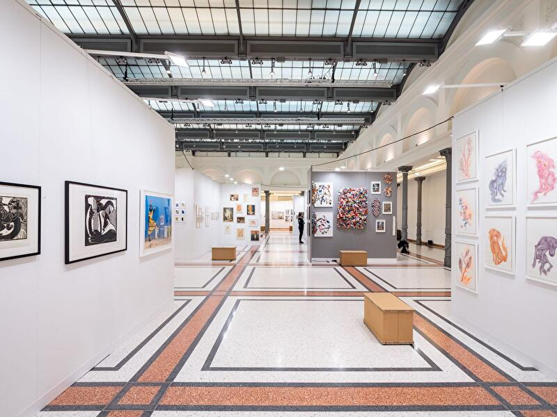
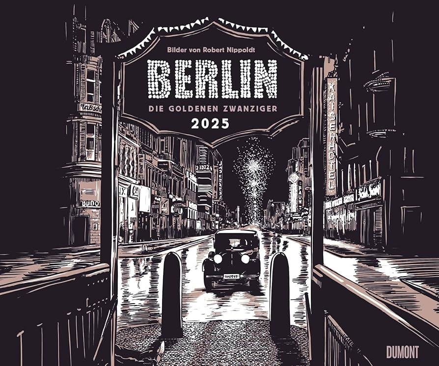

About
Zara is a Berlin-based painter whose work blends abstraction with deep emotional expression. Born in Grunewald, she discovered her passion for art at an early age, drawing inspiration from the natural world and the human experience. After completing her studies at UdK, Zara moved to Berlin, where the city’s vibrant energy and rich artistic history profoundly influenced her practice.
Her art explores themes of transformation, memory, and vulnerability, using bold brushstrokes and delicate layers of pigment to create immersive compositions. Over the past two decades, Zara has exhibited in numerous galleries, including Galerie Eigenheim and Urban Spree, earning recognition for her ability to convey the ephemeral beauty of the present moment.
Beyond her work on canvas, Zara is an active member of the local art community, mentoring emerging artists and hosting collaborative events from her Friedrichshain studio.

Zara’s journey began in the quiet corners of her childhood studio, but it was Berlin’s dynamic energy that truly shaped her artistic voice. Since moving to Friedrichshain in the early 2000s, she has become a fixture in local galleries, with exhibitions gracing the walls of renowned spaces such as Galerie Eigenheim and Urban Spree. Her pieces speak of transformation — not only in form but in spirit — reflecting the pulse of a city constantly in motion.
The Art and Inspiration
Her work is often described as a dialogue between the tangible and the ethereal, where bold brushstrokes meet delicate whispers of pigment. Inspired by Berlin’s urban landscape and the stories etched into its walls, Zara’s canvases reveal layers of memory and vulnerability. Each painting invites the viewer to linger — to find meaning within the chaos and beauty of the present moment.
Community and Collaboration
Despite her growing acclaim, Zara remains deeply connected to her neighborhood. Her sunlit Friedrichshain studio is both sanctuary and laboratory — a place where ideas are born and boundaries are pushed. Whether through solo exhibitions or collaborative projects, she continues to foster the local art community, mentoring emerging talents and hosting intimate gatherings that celebrate creativity in all its forms.
Looking Ahead
Zara’s legacy is one of quiet resilience and boundless expression. In a city that thrives on reinvention, her work serves as a testament to the enduring power of art to capture what words so often cannot. As she prepares for her upcoming exhibition at Gallery Neo, her brush continues to carve new paths — each stroke a lasting imprint on Berlin’s artistic soul.
